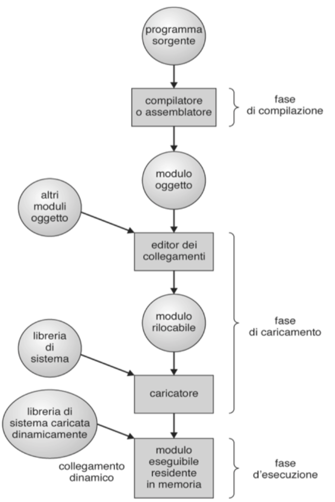

Binding degli Indirizzi
Binding degli Indirizzi: L’operazione di associazione di variabili e istruzioni agli indirizzi di memoria
Un programma sorgente usa dati (variabili) e istruzioni di controllo del flusso di computazione. Quando il programma viene compilato e caricato in Memoria Primaria (MP) per essere eseguito, ad ogni variabile è associato l’indirizzo di una locazione di memoria che ne contiene il valore. Alle istruzioni di controllo del flusso di esecuzione del programma (ossia i salti condizionati e incondizionati) è associato l’indirizzo di destinazione del salto.
In altre parole, ad ogni variabile dichiarata nel programma viene fatto corrispondere l'indirizzo di una cella di memoria di RAM in cui verrà memorizzato il valore di quella variabile. L'accesso alla viariabile, in letttura e scrittura, corrisponde alla lettera e scrittura della cella di memoria il cui indirizzo è stato "legato" (con l'operazione di binding) alla variabile. Le istruzioni di salto, che implementano costrutti come if-then, while, ecc. Sono accociate agli indirizzi in RAM dove si trova l'istruzione con cui prosegue l'esecuzione del programma se il salto viene eseguito.
Esempio
Un ipotetica istruzione C = C +1 diventerà qualcosa come:
load(R1, 10456)
Add(R1, #1)
store(R1, 10456)
10456 è l'indirizzo della cella di memoria che contiene il valore della variabile "counter". L'indirizzo 10456 è stato associato alla variabile "counter" durante la fase di bidning degli indirizzi.

Il Binding degli Indirizzi può avvenire:
- Compilazione
- Caricamento in RAM
- Esecuzione
In compilazione
Il compilatore deve conoscere l'indirizzo della cella di RAM dal quale verrà caricato il programma, in modo da effettuare il binding degli inidizzi (che avviene in compilazione). Se il SO deve scaricarte itemporaneamente il processo corrispondente in Memoria Secondaria, deve rimetterlo esattamente dove si trovava prima.
Gestione poco flessibile
Fase di Loading
Codice staticamente rilocabile Il compilatore associa ad istruzioni e variabili degli indirizzi relativi rispetto all'inizio del programma che inizia da un ipotetico indirizzo 0 virtuale. Gl indirizzi assoluti finali vengono generati in fase di caricamento del codice in MP in base all'indirizzo di MP a partire dal codice dal quale è caricato il codice. In altre parole, il biding degli indirizz, avviene appunto in fase di caricamento/loading del programma in RAM. In caso di swapping del processo, l'indirizzo a partire dl quale viene ri-caricato il programma in RAM può cambiare, ma durante il caricamento deve essere rieseguito il binding degli indirizzi, per generare i nuovi indirizzi assoluti.
Si può fare, ma richiede tempo.
Esempio
jmp_if odd R1, C. Se il codice viene caricato a partire dalla locazione 10AC, e l'indirizzo del salto veien specificato rispetto alla prima istruzione del programma, l'indirizzo finale a cui saltare sarà 10AC + C = 10B8. E quindi dopo il caricamento, l'istruzione diventerà:
jmp_if odd R1, 10B8.
Fasei di Esecuzione
Codice dinamicamente rilocabile Il codice in esecuzione usa sempre e solo indirizzi relativi. La trasformazione di un indirzzo relativio in uno assoluti viene fatta nell'istante in cui viene eseguita l'istruzione che usa quell'indirizzo. E' necessario un opportuno supporto Hardware per realizzare questo metodo senza perdita di efficienza. Si parla di binding dinamico degli indirizzi.
Un opportuno registro di rilocazione viene usato per trasformare un indirizzo relativo nel corrispodnente indirizzo assoluto durante l'esecuzione delle istruzioni. Questo registro contiene l'idirizzo di partenza dell'area di RAM in cui è caricato il programma in esecuzione.
La MMU (Memoriy Managment Unit si occuperà di trasformare gli indirizzi relativi in assolut, usando il registro di rilocazione, per accere alle celle di RAM indirizzate dalle istruzioni.
In fase esecuzione
Lo spostmento del processo da un area all'altra della MP è relizzabile senza problema. Il SO deve solo ricordarsi dell'indirizzo della locazione di MP a partire della quale è memorizzato il processo. Questo approccio è adottato in quasi tutti i SO moderni (in realtà, come vedremo, ne vieen adattota una variabile molto sofisticata, ma il concetto di base è questo).
Quando si parla di codice:
- Statico: Indirizzi nascono assoluti
- staticamente rilocabile: Gli indirizzi nascono relativi e vengono trasformati in assoluti in fare di loading.
- Dinamicamente rilocabile: Indirizzi nascono relativi e rimangono tali anche quando il programma viene caricato in RAM ed eseguito.
Spazio degl indirizzi
Condideriamo il codice dinamicamente rilocabile. Ogni indirizzo usato nel codice è riferito ad un ipotetico indirizzo 0: l'indrizzo della prima istruzione di cui è formato il codice.
0000 load R1,14
0004 jmp_if_odd R1,C 0008 add R1,#1
000C mul R1,#2
0010 store R1,14
0014 /* four byte int. var */
Qualsiasi indirizzo usato in quel codice, che potrà essere:
- l'indirizzo di una cella di memoria contenente una delle variabili del codice.
- L'indirizzo specificato in una istruzione di salto del codice, e che trasferisce il controllo ad un altra istruzione del codice.
Avrà un valore compreso tra 0 e l'indirizzo dell'ultima "cella di memoria" occupata dal programma (codice e dati). Questo insieme di indirizzi prende il nome di spazio di indirizzamento logico o virtuale del programma o spazio degl inzirizzi logici (o virtuali) del programma.
Il codice viene caricato in RAM ed eseguito, e siccome è dinamicamente rilocabile, gli indirizzi usati nel codice rimangono relativi, coià continuano a fare riferimento all'ipotetico indirizzo 0 della prima cella di memoria occupata dal codice.
Indirizzi logci(o virtuali): Indirizzi generati dalla CPU (in termini approssimativi, indirizzi che "escono" dalla CPU per raggiungere la memoria RAM, attraverso la MMU)
Poiché il programma è caricaot dal SO in RAM a partire da una cella di memoria con indirizzo (normalmente) diverso da 0, gli indirizzi logici specificati nell'istruzione in esecuzione, per poter indrizzare correttamente la RAM devono prima passare attraverso il registro di rilocazione, in modo da venire trasformati in:
Indirzzzi Fisici: Indirizzi caricati nel MAR(Memory Address Register) per accere ad una cella di memoria primaria (in termini approssimativi, un indirizzo che esce dalla MMU e arriva alla RAM viene identificando una ben precisa cella di memoria RAM).
Spazio d'indirizzamento fisico: L0insieme degli indirizzi fisci usati dal programma programma e dai suoi dati (dipendono dall'area di memoria in cui il SO ha caricato il programma stesso.)
In realtà, le espressioni spazio di indirzzamento logico e fisico vengono usate non tanto in riferimento ad un singolo programma, ma principalmente nei riguardi di una architettura nel suo complesso.
Esempio
Conderiamo ad esempio uno specifco computer che possa essere dotato al massimo di 64Kbyte di RAM (più propriamente, 65536 byte). Per quel computer, in mainera del tutto equivalemten possiamo dire che:
- Il computer può indirizzare 216 byte di RAM
- Gli indirizzi dei byte della RAM vanno da 0000 a FFFF
- L'indirizzo di un qualsiasi byte della RAM è scritto su 16bit(abbiamo bisogno di 16 bit per indirzzare uno qualsiasi dei byte della RAM)
Ossia, possiamo dire che lo Spazio d'indirzzamento fisico di quel computer è scritto su 16 bit, o che va da 0000 a FFFF, o che è di 64Kbte.
Considriamo ora un compilatore per quel computer, e supponiamo che nella generazione del codice (dinamicamente rilocabile) usi ad esempio, 12 bit per scrivere un indrizzo logico. Allora, lo spazio di inidirzzamtno logico di un qualsaisi programma di quel computer sarà al massimo di 212, ossia 4Kbyte. Un programma di quel computer potrà usare uno spazio degli indirizzi logici più piccolo di 4 Kbyte, ma nessun programma (codice + dati) potrà usare uno spazio maggiore di 4 Kbyte (perché?) e possiamo quindi dire che lo spazio d'indirizzamento logico(a disposzione dei programmi) di quel computer è scritto su 12 bit, o che va da 0000 a 0FFF (esedecimale) o che è di 4 Kbyte.
Dovremmo aver capito che, nel biding in fase di esecuzione, gli indirizzi logici e fisci non coincidono.
Librerie
Collezione di subroutine di uso comune messe a disposzione dei programmatori per sviluppare software.
Statiche: Le subroutine vengono collegate al codice del programma principale (come qualsiasi altro modulo oggetto) dal compulatore o dal loader(caricatore) e diventano parte dell'eseguibile.
Dinamiche: vengono caricate in RAM solo nel momento in cui (e quindi solo se) il programma che le usa chiama una delle subroutine della libreria di cui ha bisogno. Ossia, vengono caricate in RAM a run-time.
| Statiche |
Dinamiche |
| Non possono essere condivise tra più processi, per cui occupano più spazio in RAM di quelle dinamiche. |
Possono essere condivise tra più processi, per cui occupano meno spazio in RAM. |
| Vengono caricate in RAM anche se non sono chiamate, per cui i processi partono più lentamente. |
Vengono caricate in RAM solo alla chiamata di una funzione, per cui i processi partono più velocemente. |
| Se vengono aggiornate occorre ricompilare i programmi che le usano |
Possono essere aggiornate senza dover ricompilare i programmi che le usano |
Tecniche di Gestione
vedremo ora le principali tecniche di gestione della MP, dalle più semplici alle più complesse. Alcune di queste non sono più in uso (o quasi)
Swapping
Idea: salvare in memoria secondaria l’immagine di un processo non in esecuzione (swap out) e ricaricarla (swap in) prima di dargli la CPU. Lo swapping permette di avere attivi più processi di quanti ne possa contenere lo spazio della MP: Alcuni processi sono mantenuti temporaneamente in un’area dell’hard disk detta area di swap (ad uso esclusivo del SO). Se il processo “swappato” viene ricaricato in una diversa area di MP, dobbiamo usare codice dinamicamente rilocabile. La maggior parte del tempo di swap è tempo di trasferimento dal disco alla RAM e viceversa. L’overhead che ne risulta è generalmente inaccettabile! Lo swapping di interi processi non è sostanzialmente più usato nei moderni SO.
Allocazione Contigua
La memoria principale è divisa in due partizioni, assegnate rispettivamente al SO e ai processi.Il SO si colloca nella stessa area di memoria puntata dal vettore delle interruzioni, che di solito è nella parte “bassa” della memoria.
Nel caso più semplice, l’area non assegnata al SO viene occupata da un solo processo. La protezione della MP in questo caso coincide con la protezione delle aree di memoria del SO. Un limit register viene inizializzato dal SO: ogni indirizzo logico usato dal processo utente deve essere inferiore al valore scritto nel limit register.Il registro di rilocazione viene poi usato per generare l’effettivo indirizzo fisico
Partizioni Multiple Fisse
La memoria è divisa in partizioni di dimensione fissa (non necessariamente tutte uguali!). Ogni partizione contiene un unico processo, dall’inizio alla fine dell’esecuzione. Il numero delle partizioni stabilisce il grado di multiprogrammazione. Quando un processo termina, il suo posto può essere preso da un altro processo.
Il meccanismo dei registri limite e di rilocazione può essere usato per proteggere le varie partizioni. Al context switch, il dispatcher carica nel registro di rilocazione l’indirizzo di partenza della partizione del processo a cui viene data la CPU. E carica nel registro limite la dimensione di quella partizione. Attualmente non è più in uso per gestire i normali processi utente, perchè presenta troppi svantaggi:
- Il grado di multiprogrammazione è limitato dal numero di partizioni previste. Si potrebbe usare la tecnica dello swapping, ma come abbiamo visto, questo produce un eccessivo overhead.
- Frammentazione Interna: Difficilmente un processo messo in una partizione ha esattamente la dimensione di quella partizione. Di conseguenza, la parte che rimane viene sprecata.
- Frammentazione Esterna: Spazio sprecato all'esterno della della partizione.
Partizioni Multiple Variabili
partizioni a dimensione variabile: un processo riceve una quantità di memoria pari alla sua dimensione.
Quando un processo termina lascia un “buco” in RAM, e un altro processo può occupare una parte dello spazio liberato. Col tempo si formano buchi sparsi sempre più piccoli e difficili da riempire...
Il SO deve ovviamente tenere una traccia aggiornata di tutti i buchi liberi ed occupati. Quando un processo deve essere caricato in RAM, il SO deve assegnargli una partizione di dimensione sufficiente, se ce n’è una...
Strategie scelte partizione
- First Fit: Scegli la prima partizione abbastanza grande da poter ospitare il processo
- Best Fit: scegli la più piccola partizione abbastanza grande da poter ospitare il processo
- Worst Fit: scegli la partizione più grande
Sperimentalmente, si è visto che Worst Fit è quello che funziona peggio in termini di spreco della MP. Best Fit e First Fit sono simili, per cui tanto vale usare First Fit.
Come possiamo recuperare i buchi di RAM inutilizzati? compattando la memoria: spostiamo le partizioni occupate dai processi in modo che queste siano tutte contigue fra di loro. Si forma così un unico grande buco libero. Il compattamento richiede rilocazione dei processi, sia del codice che dei dati. Questo quindi è possibile solo se si usa codice dinamicamente rilocabile. La compattazione può richiedere molto tempo e lavoro al SO. Durante la compattazione il sistema è inusabile.
Ci sono diversi modi di compattare la memoria principale:
- spostare tutti i processi ad un estremo della memoria (molto costoso)
- spostare i processi in buchi già esistenti verso gli estremi della memoria (statisticamente si sposta meno memoria)
- Compattazione parziale: spostare solo quanto necessario per fare entrare un nuovo processo che altrimenti non avrebbe spazio sufficiente
Paginazione
La Memoria Primaria (o più propriamente, lo spazio di indirizzamento fisico, ma d’ora in poi consideriamo i due concetti come equivalenti) è divisa in “pezzi” detti frame (o pagine fisiche), tutti della stessa dimensione (noi useremo sempre il termine frame).La dimensione è sempre una potenza di due (512, ..., 8192 byte). Lo spazio di indirizzamento logico viene sempre visto dal processo come uno spazio contiguo (es.: indirizzi da 000000 a 111111), ma è diviso in pagine di dimensione identica ai frame.
Per poter eseguire un processo che occupa n pagine, il SO cerca n frame liberi in cui caricare le pagine, qualsiasi gruppo di frame liberi va bene, anche se i frame non sono adiacenti. Ad ogni processo è associata una tabella delle pagine (di fatto, un array) che contiene i numeri dei frame in cui il SO ha caricato in RAM le pagine del processo. Il SO tiene anche traccia di tutti i frame liberi.
Il problema è che però adesso gli indirizzi relativi, una volta che il programma viene trasferito in RAM, sembrano non funzionare più! Infatti, non esiste più un indirizzo in RAM a partire dal quale è memorizzato il programma.
Guardate ad esempio l’istruzione “jmp_if_odd R1,C” di prog1: una volta in RAM, per funzionare correttamente dovrebbe specificare un salto all’indirizzo 0004. Come possiamo calcolare tale indirizzo di destinazione del salto?
Inserire immagine
Per far funzionare tutto, dobbiamo ripensare gli indirizzi relativi (o logici, o virtuali): non più indirizzi “lineari” all’interno dello spazio di indirizzamento logico del programma (ossia da 0 all’indirizzo dell’ultimo byte usato dal programma e dai suoi dati).
Gli indirizzi logici diventano delle coppie di valori, in cui il primo elemento della coppia specifica il numero della pagina all’interno della quale si trova la cella di memoria che vogliamo indirizzare. il secondo elemento specifica la posizione (o offset) della cella di memoria che vogliamo indirizzare rispetto ad un ipotetico indirizzo 0 (zero): l’indirizzo del primo byte della pagina specificata dal primo elemento della coppia. Quindi un indirizzo logico ha ora la forma: (pagina, offset)
Immagine 2
Un indirizzo logico viene tradotto in uno fisico così:
Il numero di pagina p viene usato come indice nella page table del processo per sapere in quale frame f è contenuta quella pagina.
Una volta noto il frame f che contiene la pagina p, l’offset d puo' essere applicato a partire dall’inizio del frame per indirizzare il byte specificato dalla coppia p,d
Vediamo più in dettaglio: ogni informazione all’interno del computer, e quindi anche un indirizzo logico, in definitiva non è che una sequenza di bit. Ad esempio: 001100010101. Ma ora un indirizzo logico è diviso in due parti, e si deve decidere quanti bit usare per specificare il numero di una pagina e quanti per l’offset all’interno della pagina. Se ad esempio usiamo 12 bit per scrivere un indirizzo logico, si può decidere di usarne 4 per scrivere il numero di pagina e i restanti 8 per l’offset all’interno della pagina. Ecco allora che l’indirizzo logico: 0011 00010101, non è altro che la notazione binaria di pagina: 3, offset: 21.
La scelta del numero di bit da usare per scrivere l’offset all’interno di un indirizzo logico non è arbitraria, ma dipende dall’hardware su cui dovrà girare il sistema operativo, ed in particolare dalle dimensioni di frame e pagine (che, ricordiamo, devono avere la stessa dimensione). Se un frame (e quindi una pagina) ha dimensione 2n byte, allora dobbiamo usare n bit per scrivere l’offset di un indirizzo logico (provate a pensare perché). La scelta del numero di bit da usare per scrivere il numero di una pagina all’interno di un indirizzo logico (insieme alla dimensione di una pagina) determina la dimensione dello spazio di indirizzamento logico di un sistema. Qui si può vedere uno dei tanti casi di interazione tra il sistema operativo e l’hardware sottostante. È l’hardware (in questo caso il sottosistema di indirizzamento della RAM) a decidere la dimensione dei frame, e il sistema operativo “deve adeguarsi”.
In altre parole, alcune porzioni di un sistema operativo devono essere scritte tenendo conto dello specifico hardware su cui girerà il sistema, in modo da sfruttarne al meglio le caratteristiche e limitare l’overhead introdotto dal sistema operativo stesso.
Ora definiamo più precisamente l’operazione di traduzione degli indirizzi logici in indirizzi fisici. Un indirizzo logico è formato da due parti (p,d):
Numero di Pagina (p) – viene usato come indice per selezionare la entry della Page Table in cui si trova il numero del frame in cui è caricata la pagina.
Offset di Pagina (d) – viene usato all’interno del frame selezionato al passo precedente per spostarsi nel punto esatto del frame specificato dall’indirizzo logico. Viene sommato all’indirizzo base del frame per generare l’indirizzo fisico.
Ora possiamo mettere assieme tutto quello detto fin’ora e vedere come:
- Gli indirizzi logici all’interno dello spazio di indirizzamento logico possono essere interpretati indifferentemente come valori lineari oppure come coppie (pagina, offset)
- Ciascuna entry di una tabella delle pagine può contenere equivalentemente un numero di frame oppure l’indirizzo di partenza di un frame (come vedremo fra poco, per ragioni puramente pratiche si sceglie di memorizzare il numero del frame)
Ecco qui la doppia natura degli indirizzi logici, che sono allo stesso tempo valori lineari e coppie (pagina, offset).
- Consideriamo infatti uno spazio di indirizzamento logico di dimensione 2 v, dove v = m + n.
- Assumiamo che la dimensione di un frame/pagina sia 2n
- Allora dato un indirizzo logico lineare scritto su v bit: Gli m MSB indicano il numero della pagina e gli n LSB indicano l'offset
Esempio
Supponiamo di avere uno spazio di indirizzamento logico di 16 byte: gli indirizzi logici sono quindi scritti usando v = 4 bit (24 = 16).
Ogni pagina ha dimensione 2 2=4 byte, con n=2
Gli indirizzi logici vanno da 0000 (0 16) a 1111 (F16), ma il programma (istruzioni + dati) abcdefghilmn occupa solo tre pagine. Ogni istruzione/dato occupa esattamente un byte.
Inserire immagine Slide 89
Qui lo spazio di indirizzamento logico del programma è diviso in pagine, ma gli indirizzi di istruzioni e dati (appunto, lo spazio di indirizzamento logico del programma) sono valori consecutivi che vanno da 0000, dove si trova la prima istruzione del programma, a 1011, dove si trova l’ultima istruzione/dato del programma.
Ma, notate: gli m = v – n( 4 – 2 = 2) bit più significativi di ogni indirizzo, non sono altro che il numero della pagina corrispondente. I restanti n (cioè 2) bit meno significativi, non sono altro che l’offset all’interno di ogni pagina
La memoria fisica è di 20 byte, 5 frame con indirizzo da 00000 a 10011 (1316). Notate che usiamo 5 bit per un indirizzo fisico, per cui potremmo avere uno spazio di indirizzamento fisico di 25=32 byte, ma la nostra macchina ha solo 20 byte effettivi di RAM. L’indirizzo logico 0010 viene convertito nell’indirizzo fisico 10010: il numero di pagina 0 viene usato per indirizzare la tabella delle pagine e sapere che la pagina 0 si trova nel frame 4. L’offset 10 viene applicato a partire dall’inizio del frame 4.
Immagine Slide 92
Ma notate come i 5-2=3 bit più significativi di ogni indirizzo fisico indichino proprio il numero del frame a cui quell’indirizzo appartiene. Tutto funziona correttamente perchè le pagine/frame hanno una dimensione |P| che è una potenza di 2. (|P|=2 n). Allora, in ogni pagina/frame l’offset va da una configurazione di tutti zeri a una di tutti uno.Inoltre, l’indirizzo di partenza di ogni pagina/frame deve avere per forza gli n bit meno significativi tutti a 0. Quindi, gli indirizzi logici di partenza di un insieme di pagine in cui è suddiviso lo spazio di indirizzamento logico di un programma avranno sempre una forma in cui gli n bit meno significativi sono tutti uguali a 0. E lo stesso vale per i frame nello spazio di indirizzamento fisico.
Se rimuoviamo gli n bit meno significativi di un indirizzo logico fatto di v bit, i v – n bit che rimangono non fanno altro che contare (in binario) le pagine in cui è suddiviso lo spazio di indirizzamento logico.
Una volta recuperato il numero del frame che contiene una certa pagina, l’indirizzo fisico (ad esempio scritto su k bit), può essere ricostruito usando il numero del frame per i k – n bit più significativi dell’indirizzo, a cui attacchiamo gli n bit meno significativi dell’offset rispetto a quel frame (o alla pagina corrispondente, dato che hanno la stessa dimensione).
Immagine 99
Notate che, nel calcolare l’indirizzo fisico a partire da quello logico, la vera operazione che stiamo facendo è di sommare all’indirizzo di partenza del frame.
Immagine 100
Ma se pagine e frame hanno una dimensione pari a una potenza di due, allora:
- non c’è bisogno di fare effettivamente la somma tra l’indirizzo di base del frame e l’offset (il che richiederebbe tempo)
- Non c’è bisogno di memorizzare in ogni entry di una page table l’indirizzo di base del frame, ma solo il numero del frame, dato che gli n bit meno significativi dell’indirizzo sono sempre tutti a 0 (il che fa risparmiare spazio)
Per generare un indirizzo fisico basta attaccare insieme il numero del frame e l’offset, un’operazione che si può fare molto velocemente a livello hardware.
Osservazioni: La paginazione separa nettamente lo spazio di indirizzamento logico da quello fisico. Il programma “vede” la memoria come uno spazio di indirizzamento contiguo che incomincia sempre all’indirizzo logico 0. In realtà, il programma è “sparpagliato” in tanti pezzettini (i frame) nella memoria fisica, insieme ad altri programmi
La paginazione implementa automaticamente una forma di protezione dello spazio di indirizzamento. Un processo può indirizzare solo i frame contenuti nella sua tabella delle pagine.Quei frame contengono le pagine che appartengono al processo stesso, perché è il sistema operativo a costruire la tabella delle pagine di ogni processo attivo.
La paginazione è una forma di rilocazione dinamica, in cui ad ogni pagina corrisponde un diverso valore del registro di rilocazione: l’indirizzo di partenza del frame che contiene quella pagina.
la paginazione evita la frammentazione esterna: qualsiasi frame libero può essere usato per contenere una pagina.
La frammentazione interna rimane, ed è in media di mezza pagina per processo (l’ultima pagina del processo può non occupare completamente il frame che la contiene)
Il SO mantiene anche una frame table che descrive lo stato di allocazione della memoria fisica:
– quali frame sono liberi
– quali frame sono occupati e da quale pagina di quale processo
Ad ogni context switch, il SO deve “attivare” la tabella delle pagine del processo a cui viene assegnata la CPU, questo richiede un certo lavoro e aumenta il tempo necessario al cambio di contesto (in realtà, questo non è il problema più grave...).
Supporto Hardware
Dato che ogni accesso alla MP passa attraverso il sistema di paginazione, il meccanismo di traduzione degli indirizzi da logici a fisici deve essere efficiente.
Il problema fondamentale riguarda la gestione della tabella delle pagine (in inglese Page Table o PT). Ogni indirizzo logico che esce dalla CPU deve passare attraverso una entry della PT.
L’accesso alla PT deve quindi essere veloce. Se il numero di pagine per processo è piccolo, la PT può essere memorizzata all’interno di appositi registri della CPU, ma nei computer moderni, è normale usare PT da migliaia di elementi. Non possiamo metterli tutti nei registri della CPU!
Siamo costretti a tenere la PT di ogni processo in MP, consumando spazio. Ma c’è un problema più grave: Per leggere un dato all’indirizzo logico I, occorre prima accedere alla RAM per recuperare il numero del frame e calcolare l’indirizzo fisico, e poi usarlo per leggere il dato vero e proprio.
Il numero di accessi alla MP RADDOPPIA!!!
La soluzione consiste nell’usare una tecnica di caching della PT mediante una memoria associativa detta translation look-aside buffer (TLB).
Inoltre, il SO può usare un registro che contenga l’indirizzo di partenza della PT del processo attivo: il page-table base register (PTBR). Al context switch basta modificare il PTBR per “attivare” la PT del processo che viene mandato in CPU.
Funzionamento di una memoria associativa: più coppie di celle chiave – valore. Specificando in input una chiave, questa viene confrontata contemporaneamente con tutte le chiavi presenti, e viene dato in output il valore associato alla chiave specificata. Il dispositivo è molto veloce e costoso, e le dimensioni sono quindi ridotte (64 -- 1024 elementi)
Nella TLB viene caricata una porzione della PT (ovviamente, se ci sta può essere caricata tutta): numero pagina (chiave) – frame relativo (valore). Quando viene generato un indirizzo logico, il numero di pagina è presentato al TLB per ricavare il frame relativo;
Se la ricerca ha successo (hit) si ha una penalizzazione circa del 10% del tempo di accesso alla memoria senza paginazione
Se la ricerca fallisce (miss) allora occorre usare la PT in memoria primaria.
slide 117
Hit Ratio: % di successi (hit) nell’uso del TLB
Maggiore hit ratio implica una degradazione minore delle prestazioni.
Esempio: 20 nanosec necessari per accedere al TLB, 100 nsec necessari per accedere alla MP; con un hit ratio dell’80% (e quindi un miss ratio del 20%), si ha:
Tempo medio di accesso in MP = 0.8 * 120 + 0.2 * 220 = 140
le prestazioni degradano del 40%
Con un hit ratio del 98% avremmo: Tempo medio di accesso in MP =
= 0.98·120+0.02 · 220 = 122 nanosec
le prestazioni degradano del 22%
Cosa succedere quando si verifica un “miss”?
La coppia pagina-frame mancante viene recuperata attraverso la PT in RAM, ma viene anche copiata nel TLB per velocizzare i riferimenti successivi alla stessa pagina
E se il TLB è pieno, quale elemento va eliminiamo? – un elemento scelto a caso – l’elemento usato meno di recente (Least Recently Used)
Al context switch bisogna svuotare o cambiare il TLB con le pagine del nuovo processo, altrimenti la traduzione sarebbe errata!
Se, quando al processo viene data la CPU, il TLB è vuoto, all’inizio dell’esecuzione questo processo genera molti “miss”.
Se al context switch il SO carica (una parte della) nuova tabella dei processi nel TLB, il cambio di contesto diventa più pesante.
Per ridurre l’impatto di questi problemi, in molte moderne CPU ogni entry pagina-frame del TLB ha un ulteriore campo che identifica univocamente il processo che possiede la pagina corrispondente. Il TLB può così contenere, in un dato istante, elementi appartenenti a processi diversi (questo richiede, in generale, l’uso di TLB con molte entry). Quando viene cercato il numero di un frame nel TLB, il TLB stesso verifica che l’identificativo del processo scritto nell’entry corrisponda al processo in esecuzione, altrimenti genera un miss.
Slide 123
In questo modo, al context switch non è necessario rimpiazzare tutte le entry del TLB con quelle del nuovo processo.
Ovviamente, se si verifica un miss e il TLB è pieno, una entry dovrà essere sostituita con quella della pagina mancante.
Inoltre, è di solito possibile “bloccare” alcune entry del TLB che non possono mai essere sostituite, in modo che non generino mai un miss. Ad esempio quelle che appartengono allo spazio di indirizzi del SO stesso.
In molti sistemi le pagine possono essere protette da opportuni bit associati ad ogni entry della tabella delle pagine, per proteggerle in lettura, scrittura, esecuzione. Un caso particolare è il bit di validità della pagina, che indica se la pagina è effettivamente contenuta nel frame corrispondente. Per ora il problema non si pone (per ora infatti assumiamo che tutte le pagine di un processo in esecuzione siano sempre in RAM), ma vedremo l’utilità di questo bit nel capitolo sulla memoria virtuale.
Per evitare che un indirizzo logico contenga il numero di una pagina che non esiste, un page-table length register (PTLR) viene usato per memorizzare le effettive dimensioni (in termini di pagine) della PT. Ogni indirizzo logico generato viene quindi confrontato col PTLR per verificare che l’indirizzo generato sia valido. Ad esempio, se lo spazio di indirizzamento logico di un processo va dalla pagina 0 alle pagina 5, ma il processo usa un indirizzo logico del tipo (6, offset), viene generata una trap.
Pagine Condivise
Se due processi eseguono lo stesso codice, è inutile tenerne in MP due copie. La paginazione facilita la condivisione di codice, perchè questo non cambia durante l’esecuzione (si chiama codice puro o rientrante). Ad esempio, una pagina condivisa può essere usata per contenere il codice di una libreria dinamica usata contemporaneamente da più processi.
Paginazione a più Livelli
Usiamo la paginazione per evitare di aver bisogno di aree di MP contigue molto grandi, per cui dovremmo fare la stessa cosa anche per la PT...
Una possibile soluzione al problema dell’allocazione della PT consiste nel paginare la stessa PT, cioè dividere la PT in varie pagine. Si parla allora di paginazione a due livelli: la PT vera e propria (che ora chiameremo PT interna) richiede una PT esterna, che ci dice in quali frame sono state memorizzate le pagine della PT interna
Immagine 138
Consideriamo una macchina con 32 bit di spazio di indirizzamento logico e fisico, e con pagine/frame da 4 Kbyte. Ogni indirizzo logico è fatto da:
– 20 bit più significativi = numero della pagina
– 12 bit meno significativi = offset nella pagina Per paginare la tabella delle pagine, il numero di pagina p, scritto su 20 bit viene a sua volta gestito come segue:
– 10 bit più significativi (p1) = entry nella PT esterna che punta al frame F1 che contiene un pezzo della PT interna
– 10 bit intermedi (p2) = offset nel frame F1
Per capire il meccanismo in dettaglio, prendiamo la page table più grande, che ha 220 entry, e che ora chiamiamo PT interna, e suddividiamola in 210 = 1024 “pezzi”. Ogni entry della PT interna contiene il numero di un frame e se supponiamo di usare 4 byte per scrivere il numero di un frame (in realtà basterebbero 20 bit) ogni “pezzo” della PT interna occupa esattamente un un frame. Dobbiamo tenere traccia di tutti i frame in cui è stato scritto un pezzo della PT interna, e per far ciò scriviamo il loro numero (usando sempre 4 byte) nella PT esterna, che occupa esattamente un frame (perché?)
I passi per tradurre un indirizzo logico V scritto su 32 bit in un indirizzo fisico divengono quindi i seguenti:
I 10 bit più significativi di V (p1) vengono usati per indirizzare una delle 1024 entry della PT esterna (che di fatto è un array con 1024 entry da 4 byte ciascuna).
In quella entry c’è scritto il numero di un frame F1 che contiene una pagina della page PT interna.
Recuperato F1, con i 10 bit intermedi di V (p2)
indirizziamo una delle 1024 entry di F1. In quella entry c’è scritto il numero di un frame F2 che contiene la pagina (notate, il cui numero è dato da p1p2) dell’indirizzo logico V L’offset d aggiunto ad F2 genera l’indirizzo fisico
Page Table Invertita (IPT)
Mantenere un PT per ogni processo consuma spazio in memoria principale. Nelle architetture a 64 bit, le PT possono essere enormi... Una soluzione alternativa è chiamata Tabella delle Pagine Invertita (IPT).
Una IPT descrive l’occupazione dei frame della memoria fisica, quindi: c’è una sola IPT per tutto il sistema (anzichè una PT per processo); la dimensione della IPT dipende strettamente dalla dimensione della memoria primaria;l’indice di ogni entry della IPT corrisponde al numero del frame corrispondente di MP. Ogni elemento della IPT contiene una coppia: (process-id, page-number) dove:
– process-id = identificativo del processo che possiede la pagina
– page-number = indirizzo logico della pagina contenuta nel frame corrispondente a quella entry
Ogni indirizzo logico generato dalla CPU è una tripla: (process-id, page-number, offset)
Per generare un indirizzo fisico si cerca nella IPT la coppia (process-id, page-number). Se la si trova all’i-esimo elemento, si genera l’indirizzo fisico (i,offset).
Img 142
Con l’IPT si risparmia spazio, ma si perde in efficienza per cercare nella IPT l’entry che contiene la coppia (process-id, page-number) generata. Devono essere usate delle memorie associative che contengono una porzione della IPT per velocizzare la maggior parte degli accessi.
Segmentazione
In un sistema segmentato, i vari segmenti vengono memorizzati in aree non adiacenti della RAM. Ogni segmento ha la sua dimensione, e l’indirizzo di ogni elemento è indicato dal numero del segmento e dalla posizione (offset) dell’elemento in quel segmento: (#segmento, offset). In un sistema segmentato, il compilatore genera in modo automatico i segmenti in base al programma:
- variabili locali
- codice di ogni funzione o procedura
- variabili locali statiche di ogni funzione o procedura
- stack di esecuzione
oiché i segmenti sono memorizzati in MP, dobbiamo tenerne traccia con una tabella dei segmenti (ST). Ogni entry della ST è formata da una coppia:
- base del segmento (l’indirizzo fisico di partenza del segmento in MP)
- limite del segmento (la lunghezza del segmento)
Il numero di ogni segmento non è altro che l’indice nella ST che contiene la coppia (base,limite) relativa a quel segmento
Slide 147, Slide 148
Se la Segment Table è piccola, può stare nei registri della macchina. Tuttavia, di solito la Segment Table sta in Memoria Principale, e si usano due registri speciali:
- Segment Table Base Register (STBR) che indirizza la ST in MP
- Segment Table Length Register (STLR) che conta il numero di segmenti usati (ogni numero di segmento usato va confrontato con l’STLR)
Anche in questo caso, un meccanismo a memoria associativa (un TLB) viene usato per limitare l’overhead.
Protezione e condivisione
La segmentazione offre un supporto naturale per la protezione: ogni segmento sarà tutto di sola lettura (codice), o di lettura/scrittura (dati). Un bit di protezione associato ad ogni entry della ST permette di verificare via HW l’uso di ogni segmento. Se, ad esempio, si usa un segmento per ogni array, il controllo sulla legalità degli indici usati per indirizzare i suoi elementi è automatico e naturale. Anche la condivisione di segmenti è naturalmente supportata dalla segmentazione. Infatti, un segmento contiene informazioni semanticamente omogenee, come del codice o una struttura dati. Se necessario un intero segmento può quindi essere condiviso tra più processi.
Slide 152?
I segmenti di un processo, come nel caso delle pagine, non devono essere contigui in MP. Ma i segmenti hanno dimensione diversa, e non qualsiasi “buco” di MP può andar bene, per cui:
- è necessario adottare strategie di allocazione best/first fit
- ci possono essere problemi di frammentazione esterna
- Un segmento potrebbe non trovare spazio in ram (anche se lo spazio c’è...)
Tuttavia, la grandezza media dei segmenti è piccola, per cui il loro uso è comunque più vantaggioso dell’allocazione contigua a partizioni variabili.
La segmentazione è una soluzione più “naturale” della paginazione, ma soffre degli stessi problemi (seppure mitigati) dell’allocazione contigua a partizioni variabili. Per eliminare questi problemi (mantenendo i vantaggi), si possono paginare i segmenti. Queste tecniche combinate vengono usate nella maggior parte dei sistemi moderni. Il primo ad utilizzato è stato il sistema MULTICS (una sorta di antenato di Unix.)